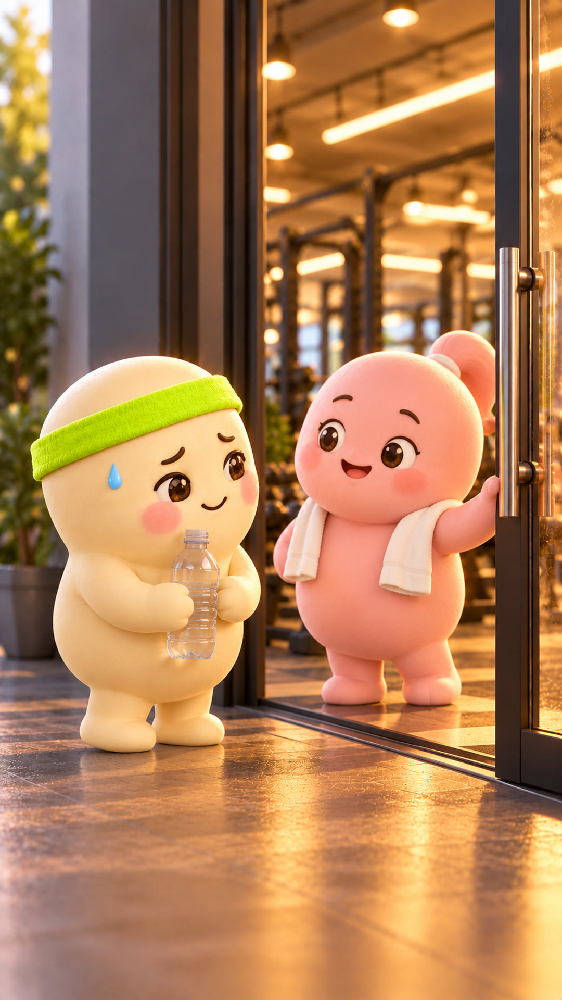
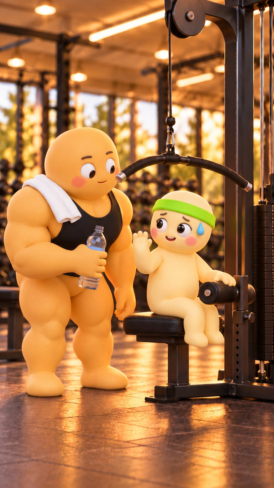
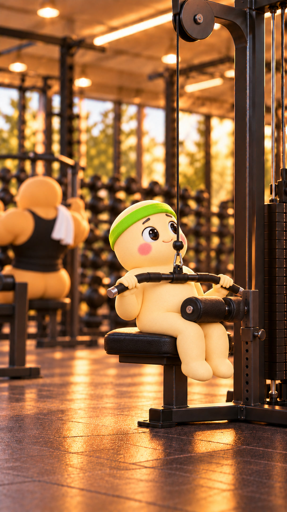
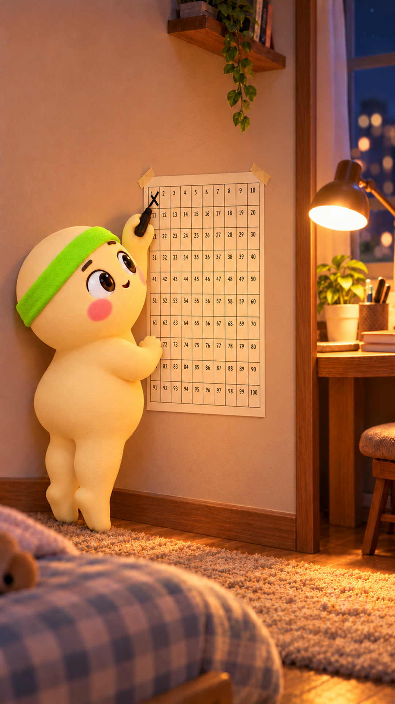

100 ngày thay đổi bản thân của Bé Đậu
Ngày 1: lần đầu bước vào
phòng gym
Rồi. Đếm tới ba là vào. Một. Hai…
Khoan. Uống miếng nước cái đã.

Ủa. Kéo xuống mà mình bay lên.

Chắc ảnh đợi máy. Thôi, hỏi thử.
"Anh ơi, máy này chỉnh sao vậy anh? Em tập nhanh rồi nhường anh."
"Hạ cái đệm này xuống nè. Anh không đợi máy đâu, em cứ tập."

Không biết chỉnh máy thì
cứ hỏi người bên cạnh.

Ngày 1/100:
xong.
Còn 99 ngày.